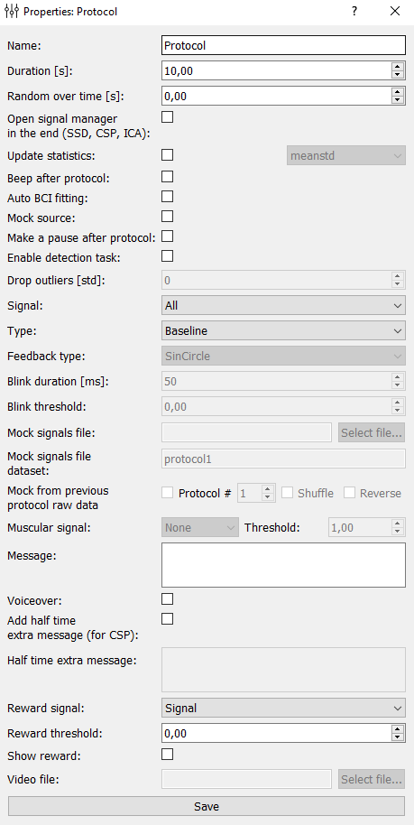

Protocol settings
{kind=link}
Protocol settings include:
Name: name of the protocol.
Duration [s]: the duration of the protocol in seconds.
Random over time [s]: a random number between 0 and the entered value will be added or substracted from the main duration each time the protocol is used.
Open signal manager in the end (SSD, CSP, ICA): opens at the end of protocol signaling manager where, by using different methods (SSD, CSP, ICA), computed spatial filters signals.
Update statistics: if this checkmark is exhibited and “meanstd” is selected, then, at the end of the protocol the average (mean) and standard deviation (std) of the signal will be recalculated, and subsequently mean will be subtracted from the signal and it will be divided by std. Min/max calculates values above zero (minimum) and usually below one (maximum), where minimum and maximum are taken from the finished protocol.
Beep after protocol: after the protocol there will be sound indicating the end of the protocol.
Auto BCI fitting: …
Mock source: …
Make a pause after protocol: enables / disables a pause after the protocol.
Enable detection task: an obsolete function. It will be removed in the next version.
Drop outliers [std]: if “Update statistics” is checked, you can enter a number indicating a border of standard deviation to detect outliers and delete them.
Signal: name of the signal that will be processing. Corresponds to the name from the “Signals” or “Composite signals” properties. It can be set to “All” in the case when no specified signal is applied, during baseline, for instance.
Type: type of the protocol. Available 4 types of protocols: Baseline (on the screen of subject will be displayed a message, is used to collect data, to update the signal statistics, calculation of spatial filters, etc.), Feedback (if “Feedback type” is SinCircle, on the subject’s screen will be displayed the circle, with jagged edges, whom degree of unevenness depends on the particular signal in the “Signal” (see previous paragraph.), the subjects task is to achieve complete smoothness of the edge of the circle), ThresholdBlink (subjects screen at the time specified in paragraph “Blink duration” will turn white if the signal exceeds threshold defined in “Blink threshold”; this protocol is needed for measuring delays and can be considered obsolete), Video (in testing).
Feedback type: type of the feedback, if it is chosen in the “Type” field. SinCircle - a shrinking circle; RandomCircle - a shrinking circle with a random bound distortion; Bar - a bar that gets higher when the signal amplitude increases.
Blink duration: only available for ThresholdBlink protocol type (see above). Deprecated function.
Blink threshold: only available for ThresholdBlink protocol type (see above). Deprecated function.
Mock signals file: only available for FeedbackProtocol. Here you can specify the file from which to read the signal for FeedbackProtocol recorded previously. This signal is false and will be changed at the time of the signal with the actual signal.
Mock signals file dataset: only available for FeedbackProtocol. Here specifies the protocol of the last experiment whose data is stored in a file specified by paragraph above. The signal recorded in this protocol will substitute the actual signal.
Mock from previous protocol raw data: only available for FeedbackProtocol. This sets an alternative method of signal substitution. Data for substitution are taken from the experiment itself (from the previous protocol, its number is indicated).
Muscular signal: only available for FeedbackProtocol. …
Message: Here you specify the message that will be displayed and presented to the subject during the block.
Voiceover: enables / disables audio message for the subject.
Add half time extra message (for CSP): if a tick is exhibited, then after half the time pass, a beep sounds will occur and message will change (additional message given by paragraph below). Deprecated function.
Half time extra message: Additional message. Deprecated function.
Reward signal: the signal that will be the basic for determining the awarding for subject.
Reward threshold: the threshold, above which will launch a counter points for subject award.
Show reward: if the user is exhibited the tick count points, awards will be presented.
Video file: add a path to the video if block type is video.